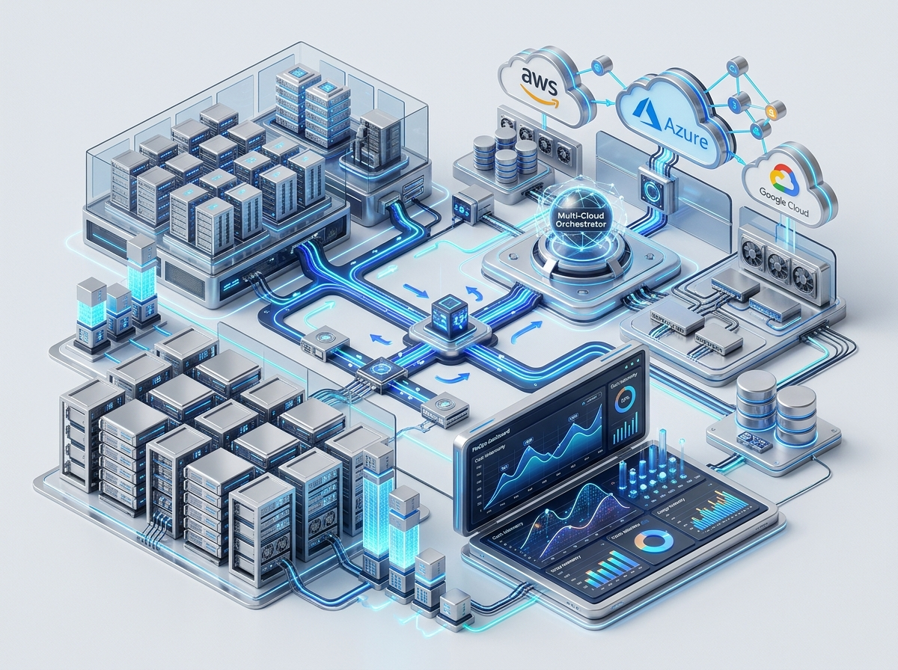

Cloud Solutions & Optimization
We review your Cloud Infrastructure and Identify Opportunities to Reduce Costs, Optimize Usage, Improve Performance and Security, and Enhance Availability within your cloud environment.
- Recommendations for Cost Management
- Optimization of your Infrastructure
- Improve Scalability, Reliability and Security

Core Engineering Capabilities
Infrastructure as Code (IaC)
Eliminate manual console click-ops. We codify entire production environments using Terraform, OpenTofu, and Pulumi for reproducible, auditable, and automated provisioning.
Continuous FinOps Governance
Automated cost anomaly detection, right-sizing analysis, Spot/Reserved instance commitment strategies, and unit-economics telemetry to guarantee predictable spend.
Container Orchestration
Design and hardening of production-grade EKS, GKE, and AKS clusters with horizontal pod autoscaling, ingress control, and service meshes for microservice resilience.
Zero-Trust Cloud Security
IAM least-privilege role audits, KMS automated key rotation, VPC security groups, and cloud security posture management (CSPM) compliance enforcement.